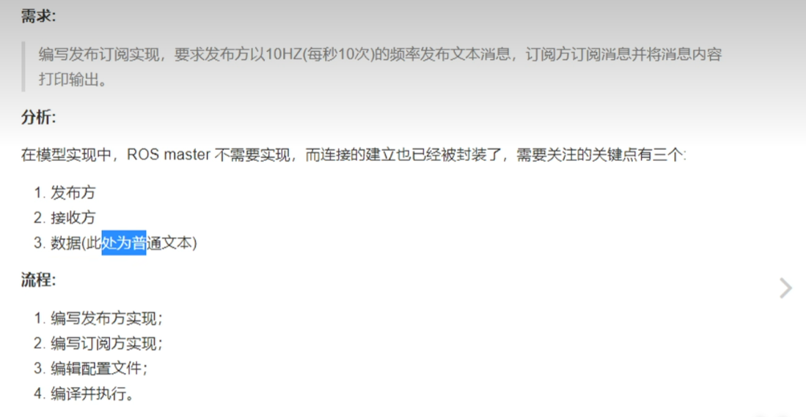
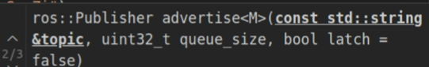
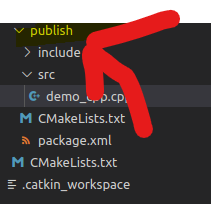
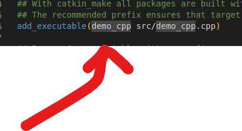
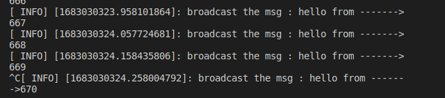

ROS-正式开发-3
ROS通信机制
机器人是一种高度复杂的系统性实现。在机器人上可能集成了各种传感器（雷达）等，为了解耦合，ROS的每一个功能点都是一个单独的进程，并且他们是可以独立运行的。ROS是进程的分布式框架。
ROS 实现通信机制的三种实现策略
1）话题发布 （发布订阅模式）
2）服务通信 （请求响应模式）
3）参数服务器 （参数共享模式）
话题通信
话题通信时ROS使用频率最高的一种通信模式，也是基于发布订阅模式的，也即：一个节点发布消息，另一个节点订阅信息：
如：机器人执行导航功能的时候使用的传感器时激光雷达，机器人会采集相关的信息并且完成计算，随后控制运动生成信息
这样通信的作用时用在不断更新的，少逻辑处理的数据传输场景。下面尝试实现一下！
在这个模型里头，有三条个主角：ROS MASTER（管理者），Talker（话题发出者），Listener（订阅者）

master 根据话题建立发布者和订阅者之间的联系。
使用的协议时RPC和TCP， 并且Listener和Talker可以存在多个。talker和Listener建立连接以后，master就可以关闭了。当然这些流程已经被封装，我们没有必要去了解。
实践1 - ROS in C++
例子：我们要以每秒10次的频率实现信息的发送！

我们按照先前早就讲过的流程创建一遍工程，在已经完事了的CPP文件下书写如下的代码
#include"ros/ros.h"
#include"std_msgs/String.h"
/*
publisher release:
1. incldue Files: ROS RO
2. init ROS node
3. create Handle of the node
4. create publisher
5,create publisher logic and the data
*/
int main(int argc, char* argv[])
{
// init a node
ros::init(argc,argv,"such_a_node"); // 别带空格！这是涉及到命令行的
// create a handle
ros::NodeHandle nodeHandle;
// create Publisher
ros::Publisher pub = nodeHandle.advertise<std_msgs::String>("this_is_a_topic",10);// 别带空格！这是涉及到命令行的
std_msgs::String msg;
// create the msg
while(ros::ok) // this node is still available
{
msg.data = "hello this is a msg"; // 设置字符串
pub.publish(msg); // 向外广播
}
return 0;
}

看到这个节点句柄的 advertise API了嘛，这就是一个广播函数第一个很好理解，就是话题名称，第二个是什么呢：我们的网络通信可能会有阻塞，于是ROS会将这些被阻塞的数据存储到队列里，等到网络稍微流畅的时候再发送出去！
当我们编完Ctrl + Shift + B结束编译之后，在一个命令行窗口处输入
roscore 启动大环境
rosrun publish demo_cpp

啥也没有！那就对了！
// 再开一个
rostopic echo + 'topic_name' 比如说我的就是
rostopic echo this_is_a_topic 消息就这样打印出来了！
下面设置一下频率！和计数器的使用
#include"ros/ros.h"
#include"std_msgs/String.h"
#include<sstream>
/*
publisher release:
1. incldue Files: ROS RO
2. init ROS node
3. create Handle of the node
4. create publisher
5,create publisher logic and the data
*/
int main(int argc, char* argv[])
{
// init a node
ros::init(argc,argv,"such_a_node");
// create a handle
ros::NodeHandle nodeHandle;
// create Publisher
ros::Publisher pub = nodeHandle.advertise<std_msgs::String>("this_is_a_topic",10);
std_msgs::String msg;
// create the msg
// create a ratio obj
ros::Rate rate(10);
int count = 1;
while(ros::ok) // this node is still available
{
//msg.data = "hello this is a msg";
std::stringstream ss;
ss << "hello from ------->"<<count;
msg.data = ss.str();
pub.publish(msg);
// add log
// transform into C Style String
ROS_INFO("broadcast the msg : %s",ss.str().c_str());
rate.sleep();
count++;
}
return 0;
} 这个字符串的拼接使用扩展的ROS里的函数

订阅方的实现
我们这样实现一个如此的Demo!
#include"ros/ros.h"
#include"std_msgs/String.h"
#include<sstream>
void doMsg(const std_msgs::String::ConstPtr &msg){
// by this const ptr to subscribe the msg
ROS_INFO("Have received the %s",msg->data.c_str());
}
int main(int argc, char *argv[])
{
/* same as before... */
ros::init(argc,argv,"sub");
ros::NodeHandle nodeHandle;
// the last var is the callBackFuncPointer
ros::Subscriber sub = nodeHandle.subscribe("this_is_a_topic",10,doMsg);
// nake sub receive the msg consistently
ros::spin();
return 0;
}
为了处理得到的信息，就是在这里的回调函数实现对信息的处理的！
当然，带上Cmakelists 的配置，不然系统不认识！